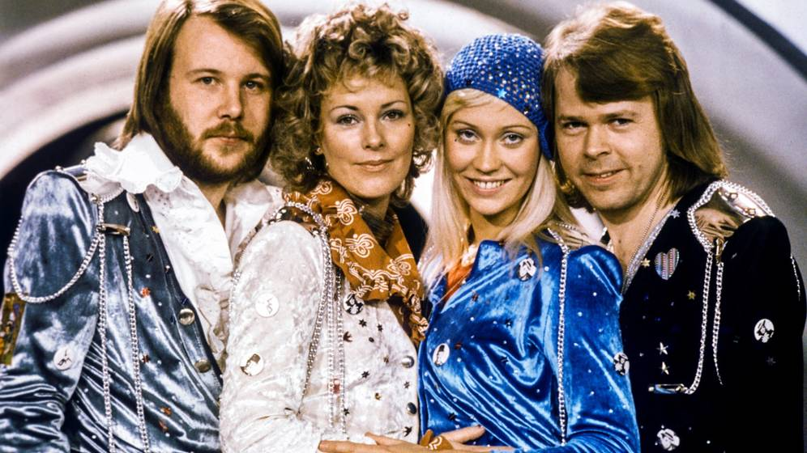
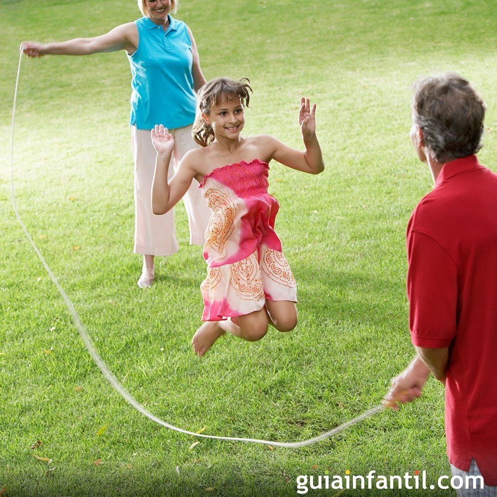

Lugares que puedes visitar.
Itálica es una antigua ciudad romana situada en el actual término municipal de Santiponce (Sevilla), en la comunidad autónoma de Andalucía, España.
Isla Mágica es un parque temático situado en Sevilla, ambientado en el descubrimiento de América e inaugurado en 1997. Se formó aprovechando algunas instalaciones de la Exposición Universal de 1992. El parque cuenta con seis zonas temáticas y con una zona acuática llamada Agua Mágica.
Zahara de los Atunes es una entidad local autónoma2 perteneciente al municipio español de Barbate, en la provincia de Cádiz, Andalucía. Según las estimaciones oficiales del Instituto Nacional de Estadística (INE) obtenidas con respecto al censo del año 2016, la población de Zahara era de 1.088 habitantes.3 La localidad está situada en el sur de la provincia de Cádiz, al pie de la Sierra del Retín,4 y a orillas del río Cachón y del océano Atlántico.
Música que puede ser interesante
-
Coldplay
Coldplay es una banda británica de pop rock y rock alternativo formada en Londres en 1996.67 El grupo está integrado por Chris Martin, Jon Buckland, Guy Berryman y Will Champion. Los primeros trabajos de Coldplay hicieron que la banda fuera comparada repetidas veces con artistas como Radiohead, Oasis, INXS, U2 y Travis.8 Alcanzaron el éxito internacional con el lanzamiento de su sencillo «Yellow», seguido por su álbum debut, Parachutes (2000), que fue nominado a los Premios Mercury. -

The Cure
The Cure (también conocida como Cure) es una banda británica de rock alternativo formada en 1976 en Crawley (Inglaterra).2 En sus orígenes, la banda se llamó Easy Cure por un breve período; allí ya figuraba uno de sus tres fundadores y futuro líder, Robert Smith, como guitarra solista.n. 1 Su trayectoria se inició a finales de los años setenta. -

Abba
Abba (estilizado ABBA®) es un grupo sueco de música pop, integrado por Benny Andersson, Anni-Frid «Frida» Lyngstad, Björn Ulvaeus y Agnetha Fältskog. El nombre «ABBA» es un acrónimo formado por las primeras letras del nombre de cada miembro (Agnetha, Björn, Benny, Anni-Frid).
Juegos que te resultarán divertidos
-

Saltar a la Comba
Saltar a la cuerda o comba. Individualmente o en grupo, al balanceo o en alto… Yo cada vez que entro con el coche en una rotonda pienso en el turno de entrar a la comba… -
Escondite
Es un juego popular que se juega mejor en zonas con potenciales puntos para ocultarse tales como un bosque, un parque, un jardín o una casa grande. -
Rayuela
La rayuela, un juego de puntería, equilibrio y diversión. Saber saltar a la pata coja y tener una buena puntería es todo lo que necesitas para jugar a la rayuela.